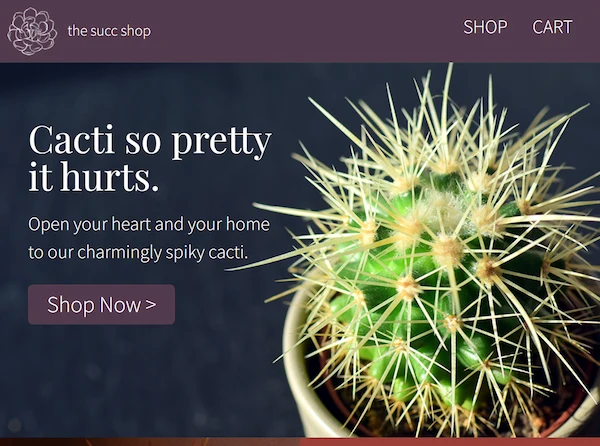
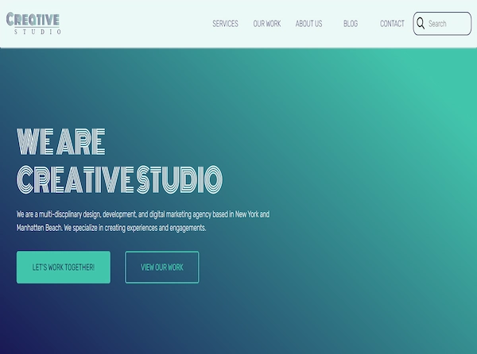
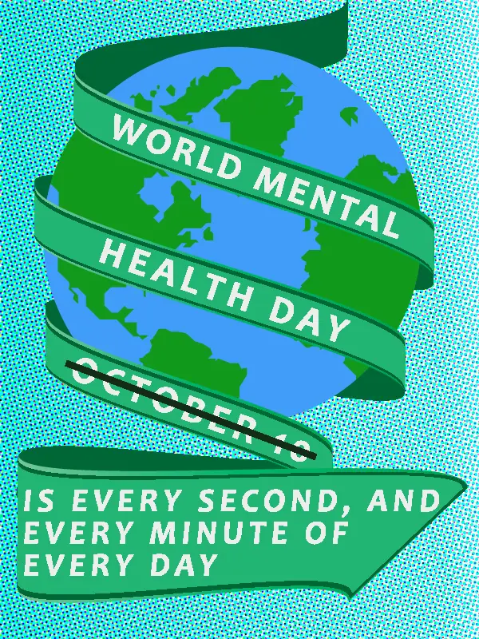

A project that got me hooked
Welcome to The Succ Shop! This was the first major coding project that I had worked on. It uses HTML for markup and CSS for styling. No JavaScript and it wasn't responsive either as we just learned about the foundational principles. I used everything I learned, from using Photoshop to get the pixel measurements, typography, colours, and layout and moving onto setting up the HTML and styles the best way I could to make sure it looked like the design picture and functioned the way it should. This meant having the nav menu go to the pages it was meant to, having hover states on everything, and using flexbox for the header, footer, shop page and cart page.
In total I spent 13 hours on this project. As I said above, I was hooked and knew what I wanted to do in the future after completing this project and class.
The Succ Shop WebsiteA project that had me thinking
Welcome to Creative Studio! This was a project I completed in my level 2 foundational coding class. It uses HTML, CSS, JavaScript and is fully responsive. This site relied heavily on the flexbox principles to get the alignment of items correct. This used everything I learned up to this point. Again, using Photoshop to know typography, colours, layout, along with a form. Optimizing my images and making sure the SVG's were laid out and styled properly. The newest parts for this project were the horizontal scroll tiles on smaller screens and the parallax scroll technique on the contact page. I was able to complete these items although it took a bit of trial and error to make them work.
This project really had me thinking. Not only about how to complete it from a coding perspective but how amazing it looks and what is actually possible for a website design and what can be coded.
Creative Studio's WebsiteA project that opened possibilities

Ready to Learn by Habit? This was a project that I completed in my web usability class. It uses everything I had learned from multiple classes. This project was focused on usability and using flexbox, grid and different layout principles in order to make it look clean and professional. The tricky part was figuring out how to get things to stack properly and than go to an angle while being on separate rows.
Learning grid opened up quite a few possabilities for me. Having the experience to use flexbox, grid, multi-columns, and writing mode makes me excited to see what other designs are possibly with code.
Learning By Habit WebsiteA project about something I value
It's good to focus on your mental well-being. This project was completed in Adobe Illustrator. It had to have a halftone element to it. I choose a background as the halftone with the world in front. The colour green is used to represent World Mental Health Day which is why I choose this for the ribbon colour. I felt the halftone background and the ribbon wrapping around the world made the foreground pop out more and almost give it a 3D look. I'd want to change the two tone and make it a lighter blue to white as it currently takes a bit away from the world which is what the focus should be.
I originally thought I'd want to design when I started the Web Design and Development program at NAIT. Instead I found out I want to do programming instead. The Visual Communications class where I completed this project in was a lot of fun and allowed me to stretch my creative muscles and try to continually do better each project.